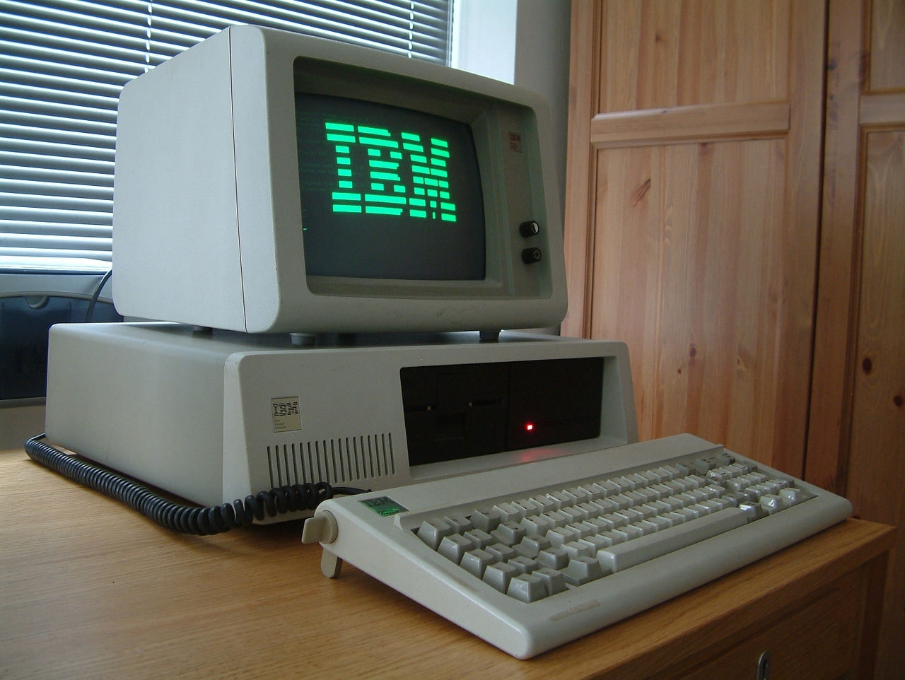

IBM PC
 oryginalna wersja i przodek platformy komputerów osobistych, zapoczatkowanej 12 sierpnia 1981 roku przez przedsiebiorstwo IBM modelem IBM 5150, znanym jako IBM PC.
Zostal opracowany przez zespol inzynierow i wykonawcow pod kierownictwem Dona Estridge’a z IBM Entry Systems Division w Boca Raton, na Florydzie.
Ogolne okreslenie „komputer osobisty” bylo w uzyciu jeszcze przed 1981, stosowano je juz w 1972 roku dla Xerox PARC Alto, ale ze wzgledu na sukces modelu IBM Personal Computer, okreslenie „PC” zaczelo oznaczac dokladniej mikrokomputer biurkowy zgodny z produktami IBM PC.
oryginalna wersja i przodek platformy komputerów osobistych, zapoczatkowanej 12 sierpnia 1981 roku przez przedsiebiorstwo IBM modelem IBM 5150, znanym jako IBM PC.
Zostal opracowany przez zespol inzynierow i wykonawcow pod kierownictwem Dona Estridge’a z IBM Entry Systems Division w Boca Raton, na Florydzie.
Ogolne okreslenie „komputer osobisty” bylo w uzyciu jeszcze przed 1981, stosowano je juz w 1972 roku dla Xerox PARC Alto, ale ze wzgledu na sukces modelu IBM Personal Computer, okreslenie „PC” zaczelo oznaczac dokladniej mikrokomputer biurkowy zgodny z produktami IBM PC. 
Podstawowy kod rozruchowy IBM PC w ROM to BIOS (Basic Input/Output System). Zawiera on bibliotekę podstawowych funkcji i zadan, takich jak wyjscie wideo, wejscie klawiatury, dostep do dysku, obsluga przerwan, testowanie pamieci i testowanie innych komponentow systemu.
BIOS takze laduje system operacyjny. BIOS oryginalnego IBM PC mogl byc rozszerzony o ROM BASIC (nie mylic z basic ROM), czyli jezyk programowania BASIC w stalej pamieci komputera (ROM).
Do tego celu na plycie glownej komputera PC przeznaczono 4 podstawki pod pamieci ROM (4x8kB), albo jedna podstawke pod ROM 1x32kB (czasami zdarzalo się 5 podstawek - albo jedno - 4x8, albo drugie - 1x32).